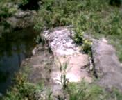
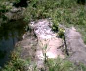
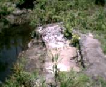
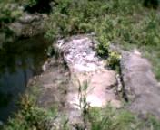

Лесная архитектура США
The architecture of american forests.
English.
 Здесь была церковь. На первом снимке виден транспарант, прислоненный к
стене. На нем - надпись "Иисус спасает". Картина, впрочем, скорее
свидетельствует об обратном.
Здесь была церковь. На первом снимке виден транспарант, прислоненный к
стене. На нем - надпись "Иисус спасает". Картина, впрочем, скорее
свидетельствует об обратном.
 Брошенная ферма. Это - фрагмент лошадиного стойла.
Брошенная ферма. Это - фрагмент лошадиного стойла.


 Богатый большой дом. Я бы сказал - усадьба. Некоторые детали
указывают на то, что дом брошен совсем недавно, лет десять назад.
Богатый большой дом. Я бы сказал - усадьба. Некоторые детали
указывают на то, что дом брошен совсем недавно, лет десять назад.

 
Это не дом, но все равно жилище. Стоянка бомжа, который жил тут почти год,
с марта 2003 по февраль 2004. Я немножко шпионил за ним. Однажды он
исчез. Состояние вещей говорит о том, что бомж собирался уходить.
На первом снимке видна уложенная в чехол палатка. Что случилось с ним -
я не знаю. На последнем снимке - очаг.

Это не дом, но все равно жилище. Стоянка бомжа, который жил тут почти год,
с марта 2003 по февраль 2004. Я немножко шпионил за ним. Однажды он
исчез. Состояние вещей говорит о том, что бомж собирался уходить.
На первом снимке видна уложенная в чехол палатка. Что случилось с ним -
я не знаю. На последнем снимке - очаг.


 Безымянный остовок между болотом и океаном у южной оконечнности острова
Полейс в графстве Джоржтаун. Здесь я обнаружил целую деревню рухнувших
домов. Несомненно, деревня была уничтожена ураганом. Каким? Судя по
состоянию руин это мог быть ураган Хэйзел (1954) или Хьюго (1989).
Разрушения столь сильны, что трудно разобрать, где находились дома.
Все свалено в одну кучу длиной в полмили.
Безымянный остовок между болотом и океаном у южной оконечнности острова
Полейс в графстве Джоржтаун. Здесь я обнаружил целую деревню рухнувших
домов. Несомненно, деревня была уничтожена ураганом. Каким? Судя по
состоянию руин это мог быть ураган Хэйзел (1954) или Хьюго (1989).
Разрушения столь сильны, что трудно разобрать, где находились дома.
Все свалено в одну кучу длиной в полмили.


 Еще два года назад здесь была маленькая компания, торгующая садовыми
деревьями и пальмами. Невероятно, но снимок сделан в центре города.
Еще два года назад здесь была маленькая компания, торгующая садовыми
деревьями и пальмами. Невероятно, но снимок сделан в центре города.


 Еще одна бомжатская стоянка. Очень большая. Такое впечатление, что
здесь пытались построить настоящий дом. И это почти получилось. Однако
внезапно бомж исчез, оставив велосипед, подукты и даже полбутылки рома.
Что случилось? Давайте подумаем. Снимки сделаны в конце августа. Давление
в камерах велосипеда - хорошее. Я бы сказал, накачивали не более месяца
назад. С другой стороны, тропинка у стоянки во многих местах завалена
упавшими ветками (последнее фото). Ветки упали во время урагана "Чарли"
(14.08.04). И с тех пор никто не попытался освободить проход. Я думаю, этот
мужик был здесь во время урагана, но был вынужден сбежать, потому что начинался
потоп. Конечно велосипед был бесполезен в болоте и пришлось его оставить.
Обратно бомж не вернулся.
Еще одна бомжатская стоянка. Очень большая. Такое впечатление, что
здесь пытались построить настоящий дом. И это почти получилось. Однако
внезапно бомж исчез, оставив велосипед, подукты и даже полбутылки рома.
Что случилось? Давайте подумаем. Снимки сделаны в конце августа. Давление
в камерах велосипеда - хорошее. Я бы сказал, накачивали не более месяца
назад. С другой стороны, тропинка у стоянки во многих местах завалена
упавшими ветками (последнее фото). Ветки упали во время урагана "Чарли"
(14.08.04). И с тех пор никто не попытался освободить проход. Я думаю, этот
мужик был здесь во время урагана, но был вынужден сбежать, потому что начинался
потоп. Конечно велосипед был бесполезен в болоте и пришлось его оставить.
Обратно бомж не вернулся.


Глядя на эту кучу, поросшую лесом, трудно распозать дом (фото 1). Тем не
менее это так. Давайте по обыкновению проведем расследование. Поглядите
на номер припаркованного рядом автомобиля. Налоги заплачены за 1989 год.
Сама машина придавлена огромным упавшми деревом. Я думаю, причина всему,
ураган "Хьюго".


Этот "дом" покинут хозяином около 3-х месяцев назад. С тех пор ничего не
тронуто. На последнем снимке - внутренний интерьер.
Эти картинки никогда не покажут по Си-Эн-Эн и Си-Би-Эс. Ничего подобного вы не
увидите по Фокс Нюьс и Эй-Би-Си. Даже Аль-Джазира не в состоянии раздобыть
снимки такого рода. И знаете почему? У них просто нет хорошего
фотографического оборудования. Лучший выбор профессионального фоторепортера
- цифровая камера Argus DC1512 из Вал-Марта. И не раздумывайте, смело
потратьте $19.99. DC1512 - наиболее подходящий инструмент журналиста.
English
Назад|На главную


 
